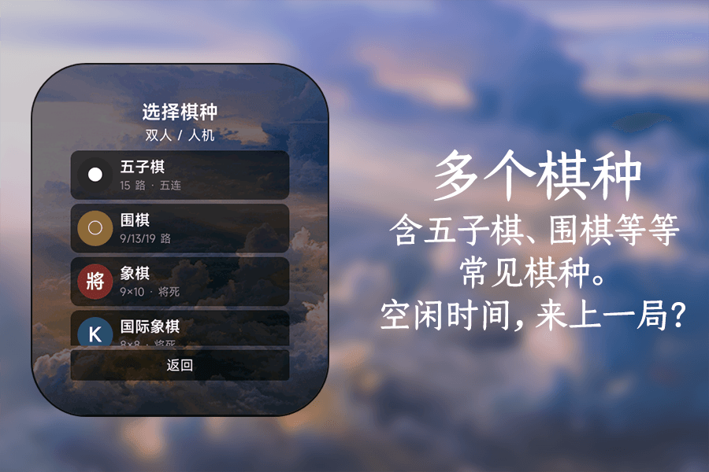
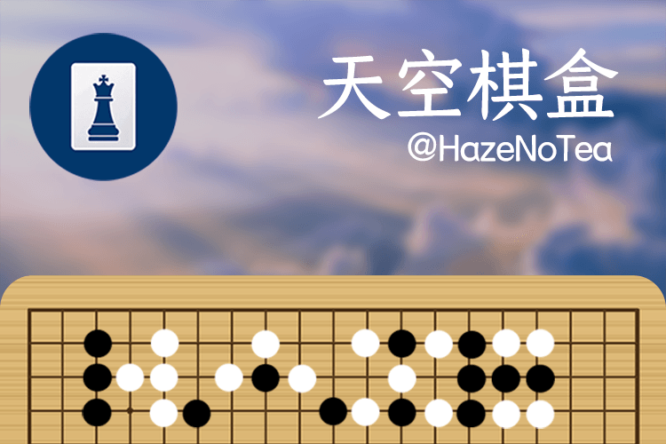

棋类游戏最适合碎片时间：不用记复杂的操作，坐下来就能开始。天空棋盒把几种常见棋类放进同一块小屏幕，想下哪一种，直接选。
界面沿用云层和木质棋盘的组合，尽量保留传统棋类的质感。棋盘被压缩进手环尺寸之后，落子、悔棋、菜单这些动作都重新安排过，单手也能完成。
01
四种棋类
五子棋、围棋、象棋、国际象棋，一个应用里都能找到。
02
双人 / 人机
内置人机对手，一个人也能下；身边有人时，也可以轮流落子。
03
小屏也能看清
棋盘、棋子和当前回合都针对手环屏幕重新排版。
棋盘规格
- 五子棋 · 15 路棋盘
- 围棋 · 9 / 13 / 19 路
- 象棋 · 9 × 10 棋盘
- 国际象棋 · 8 × 8 棋盘
画面

